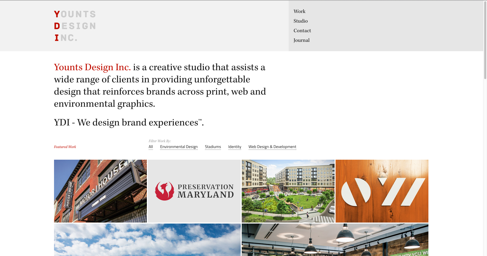

Design for the WWW
Younts Design Inc.

This is a website for a Baltimore based design agency that specializes in environmental design. It has a toolbar that collapses as you scroll down to become more compact. I like the use of detail tiles for their projects, which lead to project description pages.